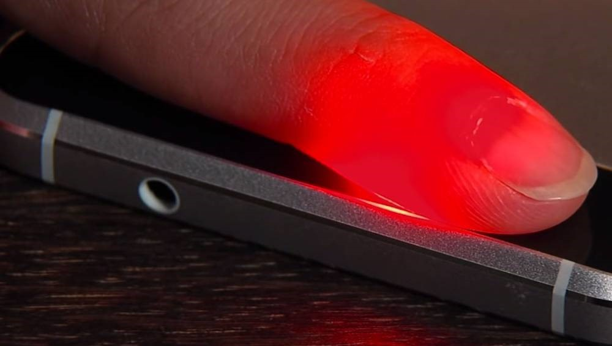

ENTREGABLE I
INTRODUCCIÓN: La anemia es uno de los mayores problemas de salud pública que afecta a la población en el mundo desarrollado y en desarrollo, no solo porque es el daño más común y el más ampliamente distribuido [1], dado que es el más prevalente entre los grupos vulnerables, como niños pequeños y mujeres en edad fértil [2]. Los afectados son el 43% de los menores de 5 años, 38% de las mujeres gestantes y el 29% de las no gestantes [1]. En el Perú durante el año 2016, padecieron anemia el 43,6% de los niños de 6 a 35 meses [3], el 62,1% de los niños de 6 a 8 meses [4]. La prevalencia de anemia existente en niños menores de cinco años es del 33,3% [4] y desde años anteriores estos valores se mantienen, el 2009 la prevalencia de anemia en el mismo grupo de edad fue de 37,2% [5]. Por otro lado, en el 2016, tuvieron anemia el 20,8% de las mujeres entre los 15 y 49 años todas residentes en nuestro país, el 27,9% de las gestantes y el 23,5% de las que dan de lactar [4].

Efecto de la anemia en el desarrollo motor y la productividad: El desarrollo infantil es un proceso de continuos cambios y desarrollo, se ha documentado ampliamente la relación existente con la anemia en las primeras etapas de vida; estas áreas son el desarrollo motor, mental y conductual del individuo. [6][7] Asimismo, algunos estudios sugieren que estos efectos podrían tener un impacto a largo plazo, que es imposible revertir aunque el individuo ya no padezca anemia. Aunque son muchos los factores que intervienen en el desarrollo motor del niño, tanto internos como externos, la presencia de la anemia representa un gran riesgo sobretodo en el período crítico de los primeros años o meses de vida [7]. Una revisión sistemática realizada por Szajewska, Ruszczynski y Chmielewska en el 2010, compara los efectos de la suplementación y la no suplementación, en madres gestantes no anémicas y niños saludables no anémicos, excluyendo a los sujetos con anemia. Se encontró que la suplementación de hierro en niños influye positivamente en su desarrollo psicomotor [9]. Además, cabe resaltar que el desarrollo motor influirá posteriormente en la ejecución de funciones de lectura y escritura, que involucran tanto áreas cognitivas como motoras, las cuales al no desarrollarse correctamente pueden llegar a afectar a la productividad del individuo en el futuro. Esto se ve reflejado en la productividad y competitividad del Perú que se ubica en el puesto 72, lo cual representa un retroceso de 5 posiciones respecto al Informe del año pasado y 11 posiciones respecto al puesto 61 que ocupó el año 2013[12]. Este año nos superan en el ranking 5 países que el año anterior se encontraban detrás de nosotros: Hungría, Chipre, Irán, Jamaica y Marruecos [12].
En Latinoamérica y el Caribe, este año se ubican delante de Perú: Chile (33), Costa Rica (47), Panamá (50), México (51), Colombia (66) y Jamaica (70). Detrás nuestro están: Uruguay (76), Brasil (80), Trinidad y Tobago (83), Guatemala (84), Argentina (92), Nicaragua (93), Honduras (96), Ecuador (97), República Dominicana (104), El Salvador (109), Paraguay (112), Venezuela (127) y Haití (128) [12].
Observación: Existen varios factores que juegan un papel importante para definir la competitividad del Perú: Corrupción, Burocracia gubernamental, Impuestos, Inadecuada infraestructura, Regulaciones laborales restrictivas, Inseguridad, entre otros. [12]
Además, haciendo una comparación entre la productividad de un peruano con un chileno, un estadounidense y un chino, se tiene la siguiente relación:
Fuente: Análisis: un estadounidense es tan productivo como 5 peruanos. El Comercio.
Fuente: Análisis:Efecto de la anemia en el desarrollo cognitivo: El desarrollo cognitivo incluye funciones de ejecución del pensamiento, memoria, razonamiento, atención, procesamiento visual, así como solución de problemas [8]. De manera similar que con el desarrollo motor, la anemia en la infancia reduce las habilidades cognitivas de los niños [7, 9, 10]. En base a una revisión sistemática del 2014, se sabe que la anemia con o sin deficiencia de hierro causa algún déficit cognitivo [11]. Este déficit se ve reflejado posteriormente en el desempeño académico, el cual se puede medir en base a la tasa de repitencia escolar a nivel nacional y regional.
Asimismo, los resultados de las pruebas PISA, nos muestran la posición del Perú respecto de otros países latinoamericanos, estando este entre los últimos puestos en el año 2015. Este hecho lo podemos relacionar a que la mayoría de los niños que participaron de las pruebas tuvieron anemia a temprana edad:

Relación entre la anemia y la depresión Las enfermedades además de afectarnos a nivel físico nos afectan a nivel emocional, y la anemia al ser la deficiencia de hierro en la sangre puede afectarnos en el plano psicológico, nos hace comportarnos de manera distinta con quienes nos rodean y quita las ganas de realizar algún esfuerzo, nos vuelve apáticos [14]. Un estudio transversal a gran escala, realizado por H. Vulser; E. Wiernik; N. Hoertel, examina la asociación entre la depresión y la anemia en adultos libres de enfermedad crónica y de medicación de la población general. Los niveles de hemoglobina se midieron entre 44 173 participantes sanos [63% hombres; media [desviación estándar] edad = 38,4 (11,1) años] desde el estudio de cohorte “Investigations Préventives et Cliniques” (IPC). La depresión se midió con el Cuestionario de Depresión segunda versión, Abreviado. Se realizaron análisis de regresión logística para examinar la asociación entre la anemia y la depresión, mientras se ajustó para una amplia gama de características sociodemográficas y factores relacionados con la salud (es decir, sexo, edad, estado, nivel de estudios, situación laboral, el consumo de alcohol, el tabaquismo, la actividad física, y el índice de masa corporal). Los participantes con depresión fueron significativamente más propensos a tener anemia en comparación con los participantes no deprimidos, incluso después de ajustar por las variables sociodemográficas y relacionadas con la salud [odds ratio = 1,36; 95% intervalo de confianza = (1,18; 1,57)]. La prevalencia de anemia aumentó con la severidad de la depresión, lo que sugiere una relación dosis-respuesta (P para la tendencia <0,001). En los adultos sanos de la población en general, hemos encontrado una asociación significativa y robusta entre la depresión y la anemia [15]. Relación entre la anemia y el embarazo La Organización Mundial de la Salud (OMS) ha considerado la anemia del embarazo como un problema de salud pública. La anemia durante la gestación ha sido considerada como perjudicial para el embarazo asociándose a bajo peso al nacer y retraso en crecimiento intrauterino. EN EL 2015: Se realizó un estudio ecológico de datos de gestantes con anemia, registrados en el Sistema de Información del Estado Nutricional (SIEN), que fueron atendidas en 7703 establecimientos públicos de salud durante el 2015. Se calcularon prevalencias de anemia gestacional regionales y distritales. Mediante el índice de Moran se identificaron conglomerados distritales con alta prevalencia de anemia gestacional. Se recolectó información de 311 521 gestantes, distribuidas en 1638 distritos del Perú. La prevalencia nacional de anemia fue de 24,2% (IC 95%: 24,0-24,3) y 30,5% en el área rural vs. 22,0% en el área urbana. Las regiones de Huancavelica (45,5%; IC 95%: 44,2-46,7), Puno (42,8%; IC 95%: 41,9-43,7), Pasco (38,5%; IC 95%: 36,9-40,0), Cusco (36,0%; IC 95%: 35,3-36,8) y Apurímac (32,0%; IC 95%: 30,8-33,1) tuvieron las mayores prevalencias de anemia. El índice local de Moran identificó 202 distritos (12,3%) (44 urbanos y 158 rurales) de alta prioridad (alto-alto o hot spots) situados en Ancash, Apurímac, Arequipa, Ayacucho, Cajamarca, Cusco, Huancavelica, Huánuco, Junín, La Libertad, Lima, Pasco y Puno, que muestran conglomerados distritales con altas prevalencias [16].
EN EL 2017: Según los resultados obtenidos en un estudio realizado por alumnos de la Universidad Nacional Federico Villarreal en Hospital San Juan de Lurigancho, se concluyó que no había relación entre la hemoglobina materna preparto y el peso del recién nacido. El 55,67% de las gestantes presenta una hemoglobina mayor de 11 mg/dL. El 28 % de ellas presenta hemoglobina de entre 10,1 y 10,9 mg/dL considerándose como anemia leve, y el 16,33% presenta hemoglobina menor a 10 mg/dL, el 95,67% nacieron con un peso mayor 2500 gr y menor a 3999 gr (95,67%), Sin embargo, el otro 4,33% de los recién nacidos se distribuyen entre los que nacieron con un peso mayor 4000 gr con un 3,33% y los que nacieron con un peso menor a 2500 gr con un 1%; El 63,2% tiene anemia leve, es decir, 5 presenta una hemoglobina de entre 10,1 y 10,9 mg/dL. Mientras, el 36,8% de las gestantes presenta anemia moderada, es decir, una hemoglobina de entre 7 y 10 mg/dL. Además, no hubo casos de anemia severa. El 98% tuvo recién nacidos con un peso entre 2500 y 3999 gr. Además, el 91,7 % de las gestantes con anemia leve tuvo recién nacidos con pesos entre 2500 y 3999 gr, sin embargo, un 7,1% tuvo recién nacidos con peso mayor a 4000 gr. El 97% tuvo recién nacidos con pesos entre 2500 y 3999 gr, el 1,8% tuvo recién nacidos con pesos mayores a 4000 gr y el 1,2% tuvo recién nacidos con pesos entre 1500. El coeficiente de correlación de Pearson es 0,059 y su significación es de 0,308, lo cual indica que no existe correlación significativa entre ambas variables [17]. La Anemia en el Presupuesto Público Nacional El presupuesto del programa presupuestal Articulado Nutricional total, a nivel de gobierno nacional y regional, vinculado a las acciones priorizadas para el presente año, asciende a la suma de S/. 1 585 796 116 soles. En el Gobierno Nacional se tiene un PIA (Presupuesto Institucional de Apertura) de S/. 739 394 262 soles y en el Gobierno Regional de S/. 846 401 854 soles. La distribución del presupuesto del programa presupuestal articulado nutricional y metas físicas según productos, consolidado a nivel nacional y regional [18].
ENTREGABLE II
Causas:
1. Hábitos alimenticios: Entre las causas inmediatas de la anemia se encuentra el consumo inadecuado de hierro y de otros micronutrientes a partir de los alimentos, cuya deficiencia impide la correcta formación de los glóbulos rojos y de la hemoglobina. Se reconoce también que la vitamina A, la vitamina B2, las vitaminas B6, B12 y el Ácido Fólico intervienen en la formación de los glóbulos rojos en la médula ósea. Las vitaminas A, C y Riboflabina favorecen la absorción del hierro a nivel intestinal, cumpliendo un rol movilizador del mineral a partir de las reservas; mientras que las vitaminas C y E tienen una función antioxidante para la protección de los glóbulos rojos [1]. Por otro lado, el patrón de alimentación en el Perú es determinante del consumo de hierro en los hogares y a nivel individual. Los hogares peruanos tienen un consumo de hierro principalmente de origen vegetal cuya biodisponibilidad y absorción a nivel intestinal es baja. A nivel del hogar, se estima un consumo aparente reducido de hierro de origen animal (Hem) en todos los quintiles socioeconómicos. En hogares del quintil más pobre se consumen 1.6 mg de hierro hem per cápita al día y en los hogares del quintil de mayores recursos el consumo es de 3.6 mg per cápita al día, con limitado consumo de proteínas de origen animal [2]. Los estudios dietéticos del CENAN sobre el consumo de hierro entre mujeres y niños constatan que es fundamentalmente de origen vegetal (Gráfico No 8), siendo menores a 2 mg de hierro hem por día. A esto se suma que su absorción se ve interferida por la presencia de inhibidores en la alimentación, como los mates, el café, té e infusiones, de consumo habitual en la población. Los niveles recomendados de consumo de hierro en menores de 3 años son del orden de 11 mg de hierro por día. Datos de niños de Ayacucho [3] de 6 a 8 meses de edad muestran un consumo promedio de 1.8 mg de hierro por día; 2.6 mg, entre los de 9 y 11 meses de edad, y 4.4 mg de hierro por día entre los de 12 a 23 meses. El 90% de los niños no alcanza a consumir los niveles recomendados de hierro. Los estudios describen también que la dieta es deficiente en zinc, calcio, niacina y energía en estos niños. De la misma manera, en una zona urbano marginal de Lima Metropolitana se encontró un bajo consumo de hierro en infantes de 6 a 11 meses, de 2.4 mg de hierro por día, así como de otros micronutrientes como zinc, calcio y retinol [4].
2. Mala información en higiene del hogar: La alta morbilidad por infecciones como la diarrea y el parasitismo intestinal, los cuales afectan directamente el estado nutricional del menor, pues incrementa las pérdidas de hierro y vitamina A[5], está directamente relacionada a las inadecuadas prácticas de higiene en el hogar, desde el lavado de manos, el limitado acceso a agua segura y saneamiento básico.[1] El agua tiene una estrecha relación con la vida de las personas pues es un agente esencial de salud o enfermedad. Si está contaminada se convierte en uno de los principales vehículos de transmisión de enfermedades, afectando a los grupos más desprotegidos de la población, entre ellos a niñas y niños. A nivel nacional, si bien el 91.1% de los hogares tiene acceso a agua tratada, solo en el 38.7% de los hogares con acceso a agua para beber cuenta con suficiencia de cloro (cloro residual igual o superior a 0.5mg/l), proporción que es mayor en el área urbana (49.9%) que en el rural (3.6%).[1] 3. Enfermedades congénitas/infecciones: La enfermedad diarreica aguda (EDA), episodios de EDA, a partir de los seis meses de edad, acarrean pérdidas importantes de micronutrientes como el hierro y el zinc, y la infección respiratoria aguda (IRA) son frecuentes en los niños menores de 3 años y ocasionan la mayor morbilidad en la población que vive en medio de la pobreza, con una educación insuficiente de la madre e inadecuado saneamiento [6]. En el 2016, a nivel nacional, las EDA se presentaron en el 15% entre las niñas y niños menores de 36 meses. Obviamente, los niños con más de 3 episodios de EDA por año tienen un mayor riesgo de desnutrición aguda y de desnutrición crónica [7]. En 2016, los departamentos que mostraron las más alta prevalencia de diarrea fueron Ucayali (26.9%), San Martín (20.4%) y Loreto (20.3%), mientras que el de menor prevalencia han sido Moquegua (9%) [6]. Las infecciones respiratorias agudas (IRA) son un conjunto de enfermedades causadas generalmente por virus y bacterias. Constituyen la causa principal de consulta en los servicios de salud y forman parte del círculo vicioso entre la desnutrición y la enfermedad. A nivel nacional, en el 2016, las IRA en niñas y niños menores de 36 meses fueron del orden del 16.9%. Los departamentos de Piura (24.3%), Loreto (22.5%) y Ancash (21.6%) mostraron las más alta prevalencia de infección respiratoria aguda [6].
En la tabla anterior, se puede observar la coincidencia entre los departamentos con mayor porcentaje de las IRA en niñas y niños menores de 36 meses, y los que tienen elevada cantidad de niños y niñas menores de 3 años con anemia.
Estado del Arte:
Hemoglobin Analyzer1 Es un analizador de hemoglobina, desarrollado por EKF Diagnostics. Este dispositivo entrega resultados en 25 segundos, funciona mediante una muestra de sangre tomada del dedo índice del paciente, esta es insertada en el dispositivo, es analizado y los resultados se muestran en la pantalla del dispositivo.
EYENAEMIA2 Desarrollada en la universidad australiana Monash. Eyenaemia es una App que funciona a través del análisis del color de los ojos por medio de una fotografía, esta aplicación entrega un resultado inmediato. Los creadores fueron Jarrel Seah y Jennifer Tang, quienes ganaron la Microsoft Imagine Cup en el 2014.
Glasswing Hb3 Este dispositivo inalámbrico portátil funciona a través de baterías recargables utilizando un sensor en forma de anillo que se coloca en el dedo del donante y aplica presión, lo que ocluye temporalmente el flujo sanguíneo local. Durante la oclusión, los elementos ópticos en el sensor realizan una medición sensible de la luz transmitida a través del dedo. Esta tecnología, llamada SpectOLight ™, proporciona una medición rápida, precisa e indolora de los componentes de la sangre del donante, al tiempo que mejora la comodidad de los donantes.
HemaApp4 Es una aplicación que utiliza la cámara del teléfono para medir el nivel de la hemoglobina en sangre sin necesidad de realizar una extracción de sangre. La app activará el flash y el sensor óptico hará un recuento aproximado de la composición de la sangre en lo que a los glóbulos rojos se refiere. Una vez termine de recopilar datos, la aplicación mostrará en una gráfica si los números están dentro o no de los niveles normales. Además, guardará un historial de los análisis para un seguimiento más completo.

ENTREGABLE III
fqqggqqg


{kind=link}
{kind=link}
{kind=link}